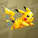
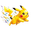
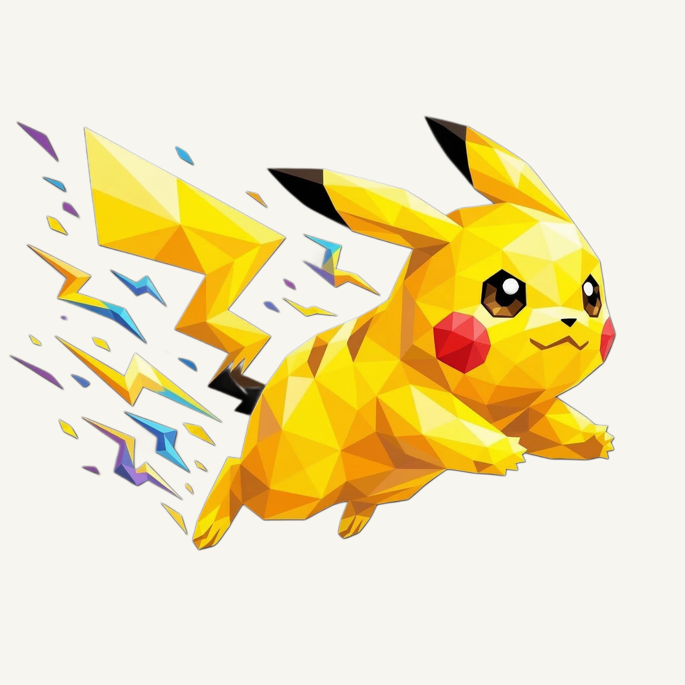
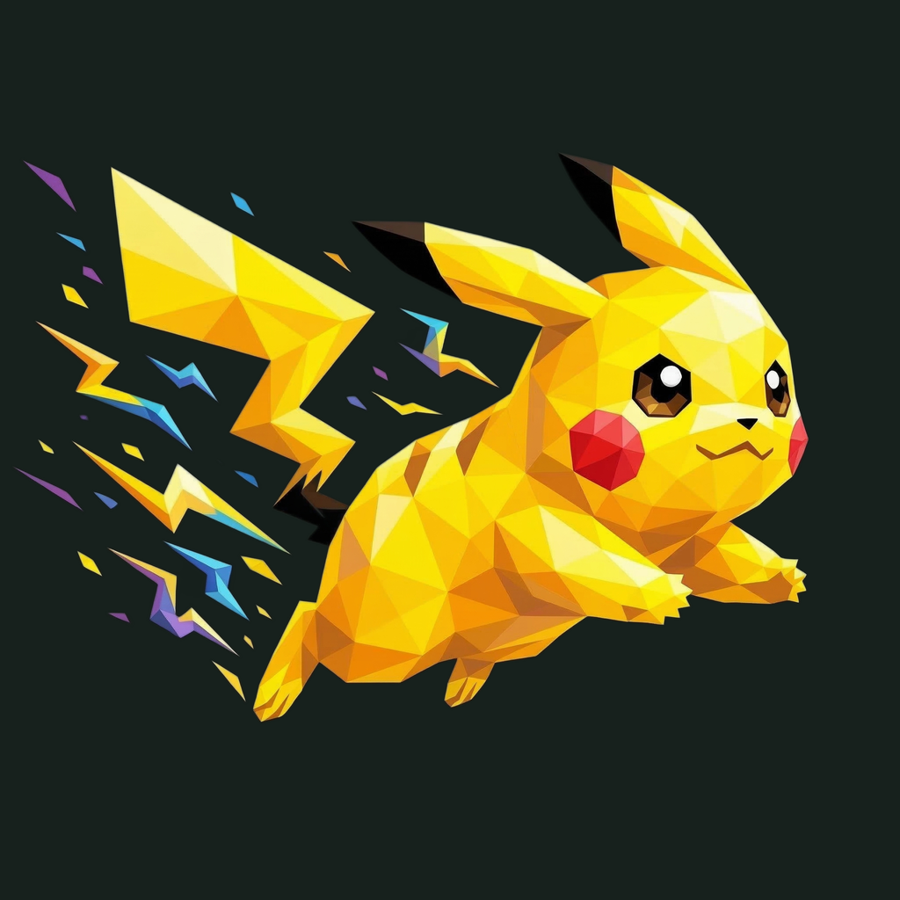

01 / Composition
Keep the charge
The original forward leap, ears, tail and lightning fragments remain exactly where they were. No source pixels, placement or colors are changed.
Animal family · Refined identity
The original spark, preserved exactly on a new olive-gold field.
Retained identity · finishing 01
Native 2048 × 2048
01 / Composition
The original forward leap, ears, tail and lightning fragments remain exactly where they were. No source pixels, placement or colors are changed.
02 / Drawing
Golden-yellow and lemon facets retain their native contrast and small colored sparks. This pass adds presentation layers without a generation request.
03 / Presentation
Large offset zigzag steps cut through a deeper olive-gold field. Their low tonal contrast supports the original lightning gesture.
Presentation tiles at 128/64 px; transparent artwork for small app and browser marks.


The original 2048 px foreground and placement are retained exactly. Existing nearest rounded-outline clearance is 26.5 px with no clipped pixels. Fine facets and small sparks simplify at 16 px; app and browser marks use the transparent source.
A designed background, with colors sampled from the exact native artwork.
Select a swatch to copy its hex value. The Pika UI primary (#C38E13) remains a separate product color.
One transparent foreground, checked on two contrasting backgrounds.


Retained original · zero image-generation requests · native 2048 × 2048
Loading study text…
The owner-selected original is retained byte for byte. Frogie guides connected flat facets; these owner-provided boards guide the independent background, offset framing, and matte surface.


{kind=link}
{kind=link}
{kind=link}
{kind=link}
{kind=link}